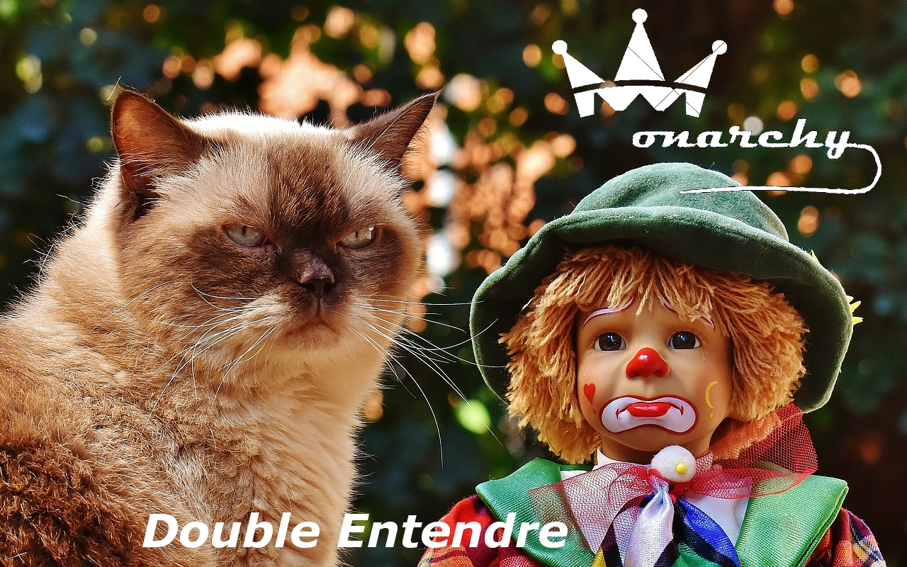

Featured Artist
Monarchy
Biography
Monarchy are a British rock band made up of Fred Venus, Bryan June, Roger Cobbler and Jon Vicars. They formed in Preston in 1970 after Bryan and Roger left their previous band 'Cheesy Grin'. They achieved moderate chart success and have played to large stadiums such as the Globe Arena, Deepdale Stadium and Gigg Lane. Their first album 'Monarchy' reached a high point of 164 in the album charts in 1974, while their 1975 album 'Night at the Guildhall' brought them international success and was the top selling album that year in Liechtenstein. That album featured the single 'Slavic Symphony', which stayed at number one in the UK for nine seconds.
Discography
Monarchy
Night at the Guildhall
Ludo
